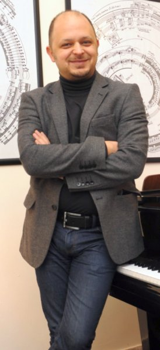

| 
|
21 January 2016
CROATIA - Recital at Zadar
[ Purcell, Franck, Harvey, Debussy, Szymanowski, JacobTV ]
23 February 2016
FRANCE - Recital, Salle de l’Institut - Orleans (19:00)
[ Ligeti Etudes 1, 2, 3, 10, 13, 14 & Musica Ricercata, Harvey, Szymanowski ] 24 February 2016
FRANCE - Orleans (time tba)
[ Boulez ]
2 March 2016
TURKEY - Duo Concert with Edua Zadory, Austrian Embassy, Istanbul (19:00)
[ Kodaly, Cerha, Kurtag, Bartok, Beethoven ] 19 March 2016
TURKEY - Recital, Arsu Guzel Sanatlar Akademisi, İstanbul (19:00)
[ Purcell, Chopin, Franck, JacobTV ] 19 March 2016
TURKEY - Masterclass & Piano Lessons, Arsu Guzel Sanatlar Akademisi, İstanbul (time tba)
[ details tba ] 21 May 2016
ITALY - Recital, Piano City Milano, Base Milano Via Bergognone 34 (17:30)
[ Ligeti, Bowie-Can-Erel, Purcell, Harvey, JacobTV ] 23 May 2016
ITALY - Recital (feat. Seren Akyoldas, Soprano) Seminario vescovile di Fiesole - Firenze (time tba)
[ Purcell, Harvey, Ligeti, Franck, JacobTV, Crumb ]
16 August 2016
FRANCE - Recital, Toulon (time tba)
[ Ligeti, Purcell, Schubert ]
P O S P O N E D by the promoter 1 November 2016
TURKEY - Recital, Marti Klasikleri, İstanbul (time tba)
[ "French Perfume" - Franck, Purcell, Boulez, Harvey ]
C A N C E L L E D by the promoter 28 February 2017
TURKEY - Recital at Erimtan Museum, Ankara (time tba)
[ Franck, Purcell, Boulez, Harvey ] 15 March 2017
TURKEY - Recital Bogazici University, Istanbul (time tba)
[ Schuloff, Hindemith ]
Recent Schedule
2015 Schedule
2014 Schedule
2013 Schedule
2012 Schedule
2011 Schedule
2010 Schedule
2009 Schedule
2008 Schedule
|